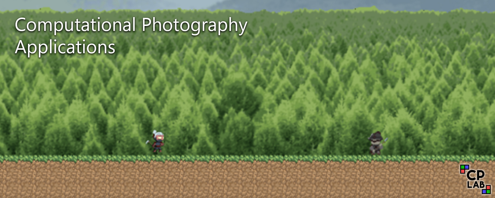

Research Themes
Computational Photography Lab specializes in physical modeling of image formation to connect computer vision and machine learning methodologies with computer graphics applications.
Our core research explores inverse rendering and its applications to realistic image manipulation, movie post-production, and in-camera image processing.
You can check out our Media page for a more non-technical description of our work and our Papers page for a full list of our publications.
Mid-level vision, or inverse rendering, is the understanding of physical properties of a scene from photographs, these properties including geometry, materials, illumination, and objects. Our work cover mid-level vision problems from many aspects, always with a focus on high-resolution estimation and in-the-wild generalization.

|
ACM Transactions on Graphics, 2023
Intrinsic decomposition is a fundamental mid-level vision problem that plays a crucial role in various inverse rendering and computational photography pipelines.
Generating highly accurate intrinsic decompositions is an inherently under-constrained task that requires precisely estimating continuous-valued shading and albedo.
In this work, we achieve high-resolution intrinsic decomposition by breaking the problem into two parts.
First, we present a dense ordinal shading formulation using a shift- and scale-invariant loss in order to estimate ordinal shading cues without restricting the predictions to obey the intrinsic model.
We then combine low- and high-resolution ordinal estimations using a second network to generate a shading estimate with both global coherency and local details.
We encourage the model to learn an accurate decomposition by computing losses on the estimated shading as well as the albedo implied by the intrinsic model.
We develop a straightforward method for generating dense pseudo ground truth using our models predictions and multi-illumination data, enabling generalization to in-the-wild imagery.
We present exhaustive qualitative and quantitative analysis of our predicted intrinsic components against state-of-the-art methods.
Finally, we demonstrate the real-world applicability of our estimations by performing otherwise difficult editing tasks such as recoloring and relighting.
@ARTICLE{careagaIntrinsic,
author={Chris Careaga and Ya\u{g}{\i}z Aksoy}, title={Intrinsic Image Decomposition via Ordinal Shading}, journal={ACM Trans. Graph.}, year={2023}, volume = {43}, number = {1}, articleno = {12}, numpages = {24}, } |


|
ACM Transactions on Graphics (Proc. SIGGRAPH Asia), 2024
Best Paper Award Honorable Mention
Intrinsic image decomposition aims to separate the surface reflectance and the effects from the illumination given a single photograph.
Due to the complexity of the problem, most prior works assume a single-color illumination and a Lambertian world, which limits their use in illumination-aware image editing applications.
In this work, we separate an input image into its diffuse albedo, colorful diffuse shading, and specular residual components.
We arrive at our result by gradually removing first the single-color illumination and then the Lambertian-world assumptions.
We show that by dividing the problem into easier sub-problems, in-the-wild colorful diffuse shading estimation can be achieved despite the limited ground-truth datasets.
Our extended intrinsic model enables illumination-aware analysis of photographs and can be used for image editing applications such as specularity removal and per-pixel white balancing.
@ARTICLE{careagaColorful,
author={Chris Careaga and Ya\u{g}{\i}z Aksoy}, title={Colorful Diffuse Intrinsic Image Decomposition in the Wild}, journal={ACM Trans. Graph.}, year={2024}, volume = {43}, number = {6}, articleno = {178}, numpages = {12}, } |


|
CVPR, 2021
Neural networks have shown great abilities in estimating depth from a single image.
However, the inferred depth maps are well below one-megapixel resolution and often lack fine-grained details, which limits their practicality.
Our method builds on our analysis on how the input resolution and the scene structure affects depth estimation performance.
We demonstrate that there is a trade-off between a consistent scene structure and the high-frequency details, and merge low- and high-resolution estimations to take advantage of this duality using a simple depth merging network.
We present a double estimation method that improves the whole-image depth estimation and a patch selection method that adds local details to the final result.
We demonstrate that by merging estimations at different resolutions with changing context, we can generate multi-megapixel depth maps with a high level of detail using a pre-trained model.
@INPROCEEDINGS{Miangoleh2021Boosting,
author={S. Mahdi H. Miangoleh and Sebastian Dille and Long Mai and Sylvain Paris and Ya\u{g}{\i}z Aksoy}, title={Boosting Monocular Depth Estimation Models to High-Resolution via Content-Adaptive Multi-Resolution Merging}, journal={Proc. CVPR}, year={2021}, } |


|
SIGGRAPH, 2024
Existing methods for scale-invariant monocular depth estimation (SI MDE) often struggle due to the complexity of the task, and limited and non-diverse datasets, hindering generalizability in real-world scenarios. This is while shift-and-scale-invariant (SSI) depth estimation, simplifying the task and enabling training with abundant stereo datasets achieves high performance. We present a novel approach that leverages SSI inputs to enhance SI depth estimation, streamlining the network's role and facilitating in-the-wild generalization for SI depth estimation while only using a synthetic dataset for training. Emphasizing the generation of high-resolution details, we introduce a novel sparse ordinal loss that substantially improves detail generation in SSI MDE, addressing critical limitations in existing approaches. Through in-the-wild qualitative examples and zero-shot evaluation we substantiate the practical utility of our approach in computational photography applications, showcasing its ability to generate highly detailed SI depth maps and achieve generalization in diverse scenarios.
@INPROCEEDINGS{miangolehSIDepth,
author={S. Mahdi H. Miangoleh and Mahesh Reddy and Ya\u{g}{\i}z Aksoy}, title={Scale-Invariant Monocular Depth Estimation via SSI Depth}, booktitle={Proc. SIGGRAPH}, year={2024}, } |


|
ECCV Workshops, 2024
Class-agnostic image segmentation is a crucial component in automating image editing workflows, especially in contexts where object selection traditionally involves interactive tools.
Existing methods in the literature often adhere to top-down formulations, following the paradigm of class-based approaches, where object detection precedes per-object segmentation.
In this work, we present a novel bottom-up formulation for addressing the class-agnostic segmentation problem.
We supervise our network directly on the projective sphere of its feature space, employing losses inspired by metric learning literature as well as losses defined in a novel segmentation-space representation.
The segmentation results are obtained through a straightforward mean-shift clustering of the estimated features.
Our bottom-up formulation exhibits exceptional generalization capability, even when trained on datasets designed for class-based segmentation. We further showcase the effectiveness of our generic approach by addressing the challenging task of cell and nucleus segmentation.
We believe that our bottom-up formulation will offer valuable insights into diverse segmentation challenges in the literature.
@INPROCEEDINGS{dilleBottomup,
author={Sebastian Dille and Ari Blondal and Sylvain Paris and Ya\u{g}{\i}z Aksoy}, title={A Bottom-Up Approach to Class-Agnostic Image Segmentation}, booktitle={Proc. ECCV Workshop}, year={2024}, } |


In illumination-aware computational photography, we study physically-based models to address a wide range of photography applications. Enabled by our work intrinsic decomposition, we explore realistic manipulation of light for relighting, compositing, HDR reconstruction, and more.

|
Proc. SIGGRAPH, 2025
We present a self-supervised approach to in-the-wild image relighting that enables fully controllable, physically based illumination editing.
We achieve this by combining the physical accuracy of traditional rendering with the photorealistic appearance made possible by neural rendering.
Our pipeline works by inferring a colored mesh representation of a given scene using monocular estimates of geometry and intrinsic components.
This representation allows users to define their desired illumination configuration in 3D. The scene under the new lighting can then be rendered using a path-tracing engine.
We send this approximate rendering of the scene through a feed-forward neural renderer to predict the final photorealistic relighting result.
We develop a differentiable rendering process to reconstruct in-the-wild scene illumination, enabling self-supervised training of our neural renderer on raw image collections.
Our method represents a significant step in bringing the explicit physical control over lights available in typical 3D computer graphics tools, such as Blender, to in-the-wild relighting.
@INPROCEEDINGS{careagaRelighting,
author={Chris Careaga and Ya\u{g}{\i}z Aksoy}, title={Physically Controllable Relighting of Photographs}, booktitle={Proc. SIGGRAPH}, year={2025}, } |


|
ECCV, 2024
The low dynamic range (LDR) of common cameras fails to capture the rich contrast in natural scenes, resulting in loss of color and details in saturated pixels.
Reconstructing the high dynamic range (HDR) of luminance present in the scene from single LDR photographs is an important task with many applications in computational photography and realistic display of images.
The HDR reconstruction task aims to infer the lost details using the context present in the scene, requiring neural networks to understand high-level geometric and illumination cues.
This makes it challenging for data-driven algorithms to generate accurate and high-resolution results.
In this work, we introduce a physically-inspired remodeling of the HDR reconstruction problem in the intrinsic domain.
The intrinsic model allows us to train separate networks to extend the dynamic range in the shading domain and to recover lost color details in the albedo domain.
We show that dividing the problem into two simpler sub-tasks improves performance in a wide variety of photographs.
@INPROCEEDINGS{dilleIntrinsicHDR,
author={Sebastian Dille and Chris Careaga and Ya\u{g}{\i}z Aksoy}, title={Intrinsic Single-Image HDR Reconstruction}, booktitle={Proc. ECCV}, year={2024}, } |


|
SIGGRAPH Asia, 2023
Despite significant advancements in network-based image harmonization techniques, there still exists a domain disparity between typical training pairs and real-world composites encountered during inference.
Most existing methods are trained to reverse global edits made on segmented image regions, which fail to accurately capture the lighting inconsistencies between the foreground and background found in composited images.
In this work, we introduce a self-supervised illumination harmonization approach formulated in the intrinsic image domain.
First, we estimate a simple global lighting model from mid-level vision representations to generate a rough shading for the foreground region.
A network then refines this inferred shading to generate a harmonious re-shading that aligns with the background scene.
In order to match the color appearance of the foreground and background, we utilize ideas from prior harmonization approaches to perform parameterized image edits in the albedo domain.
To validate the effectiveness of our approach, we present results from challenging real-world composites and conduct a user study to objectively measure the enhanced realism achieved compared to state-of-the-art harmonization methods.
@INPROCEEDINGS{careagaCompositing,
author={Chris Careaga and S. Mahdi H. Miangoleh and Ya\u{g}{\i}z Aksoy}, title={Intrinsic Harmonization for Illumination-Aware Compositing}, booktitle={Proc. SIGGRAPH Asia}, year={2023}, } |


|
CVPR, 2023
Flash is an essential tool as it often serves as the sole controllable light source in everyday photography.
However, the use of flash is a binary decision at the time a photograph is captured with limited control over its characteristics such as strength or color.
In this work, we study the computational control of the flash light in photographs taken with or without flash.
We present a physically motivated intrinsic formulation for flash photograph formation and develop flash decomposition and generation methods for flash and no-flash photographs, respectively.
We demonstrate that our intrinsic formulation outperforms alternatives in the literature and allows us to computationally control flash in in-the-wild images.
@INPROCEEDINGS{Maralan2023Flash,
author={Sepideh Sarajian Maralan and Chris Careaga and Ya\u{g}{\i}z Aksoy}, title={Computational Flash Photography through Intrinsics}, journal={Proc. CVPR}, year={2023}, } |


We recently set up our custom computational photography research studio to conduct research in an active production environment. Our current hands-on research explores modeling of light, physical image formation, inverse rendering, and differentiable rendering through controlled capture setups. Stay tuned.

|

|
MSc Thesis, Simon Fraser University, 2024
AI research is transforming creative tasks, with advancements in AI tools rapidly changing post-production expectations. However, the development of these technologies is mostly driven by technologists, often without involving the creatives who will use them. This thesis presents the development of a Computational Photography Research Studio aimed at bridging this gap. The goal is to create a practical and flexible studio setup that allows collaboration between creatives and researchers, allowing production and research to occur simultaneously. This new type of research involves stakeholders, like filmmakers, to ensure the research addresses their needs and benefits creative professionals. The studio setup includes portable production cameras and lighting, enabling the capture of high-quality live-action footage and datasets necessary for developing computational photography algorithms for post-production. This environment aims to direct AI research to better serve the filmmaking community, ultimately enhancing the quality of visual storytelling.
@MASTERSTHESIS{studio-msc,
author={Obumneme Stanley Dukor}, title={Setting up a Computational Photography Research Studioh}, year={2024}, school={Simon Fraser University}, } |


|  |
Our work on mid-level vision and illumination-aware computational photography enable many immediate applications in realistic, physically-based image manipulation. We explore these applications through semester projects in CMPT 461/769 supervised by CPLab members.

|
SIGGRAPH Posters, 2025
We propose an interactive pipeline that enables the seamless integration of a 2D logo into a target image, adapting to the surface geometry and lighting conditions of the scene to ensure realistic appearance.
@INPROCEEDINGS{traceyDiaconuCompositing,
author={Tyrus Tracey and Stefan Diaconu and Sebastian Dille and S. Mahdi H. Miangoleh and Ya\u{g}{\i}z Aksoy}, title={Physically-Based Compositing of {2D} Graphics}, booktitle={SIGGRAPH Posters}, year={2025}, } |


|
SIGGRAPH Posters, 2025
We develop an object insertion pipeline and interface that enables iterative editing of illumination-aware composite images. Our pipeline leverages off-the-shelf computer vision methods and differentiable rendering to reconstruct a 3D representation of a given scene. Users can add 3D objects and render them with physically accurate lighting effects.
@INPROCEEDINGS{pengTairaCompositing,
author={Weikun Peng and Sota Taira and Chris Careaga and Ya\u{g}{\i}z Aksoy}, title={Interactive Object Insertion with Differentiable Rendering}, booktitle={SIGGRAPH Posters}, year={2025}, } |


|
SIGGRAPH Posters, 2024
Near-infrared imagery offers great possibilities for creative image editing. Lying outside the visual spectrum, the NIR information can effectively serve as a fourth color channel to common RGB.
Compared to the latter, it shows interesting and complementary behavior: its intensity strongly varies with the surface materials in the scene and is less affected by atmospheric perturbations.
For these reasons, NIR imaging has been a long-standing topic of interest in research and its integration has been proven successful for applications like false coloring, contrast enhancement, image dehazing, and purification of low-light images.
Recent developments in smartphone technology have simplified the capturing process, making NIR data readily available for broader use outside the research community.
At the same time, existing tools for NIR processing and manipulation are rare and still limited in functionality.
With many solutions lacking specialized features, the editing process is inefficient and cumbersome, making them prone to generate suboptimal results.
To tackle this issue, we introduce a simple and intuitive photo editing tool that combines RGB and NIR properties, offering functions tailored specifically for the RGB+NIR combination, and granting the user the ability to edit and refine images more creatively.
@INPROCEEDINGS{NIREditing,
author={Samuel Antunes Miranda and Shahrzad Mirzaei and Mariam Bebawy and Sebastian Dille and Ya\u{g}{\i}z Aksoy}, title={Interactive RGB+NIR Photo Editing}, booktitle={SIGGRAPH Posters}, year={2024}, } |


|
SIGGRAPH Posters, 2022
Art assets for games can be time intensive to produce.
Whether it is a full 3D world, or simpler 2D background, creating good looking assets takes time and skills that are not always readily available.
Time can be saved by using repeating assets, but visible repetition hurts immersion.
Procedural generation techniques can help make repetition less uniform, but do not remove it entirely.
Both approaches leave noticeable levels of repetition in the image, and require significant time and skill investments to produce.
Video game developers in hobby, game jam, or early prototyping situations may not have access to the required time and skill.
We propose a framework to produce layered 2D backgrounds without the need for significant artist time or skill.
In our pipeline, the user provides segmented photographic input, instead of creating traditional art, and receives game-ready assets.
By utilizing photographs as input, we can achieve both a high level of realism for the resulting background texture as well as a shift from manual work away towards computational run-time which frees up developers for other work.
@INPROCEEDINGS{parallaxBG,
author={Brigham Okano and Shao Yu Shen and Sebastian Dille and Ya\u{g}{\i}z Aksoy}, title={Parallax Background Texture Generation}, booktitle={SIGGRAPH Posters}, year={2022}, } |


Yağız Aksoy's PhD work focused on soft segmentation including natural image matting, green screen keying, and color editing. You may have encountered these methods in
OpenCV
or
Nuke CopyCat .

|
CVPR, 2017 (spotlight)
We present a novel, purely affinity-based natural image matting algorithm.
Our method relies on carefully defined pixel-to-pixel connections that enable effective use of information available in the image and the trimap.
We control the information flow from the known-opacity regions into the unknown region, as well as within the unknown region itself, by utilizing multiple definitions of pixel affinities.
This way we achieve significant improvements on matte quality near challenging regions of the foreground object.
Among other forms of information flow, we introduce color-mixture flow, which builds upon local linear embedding and effectively encapsulates the relation between different pixel opacities.
Our resulting novel linear system formulation can be solved in closed-form and is robust against several fundamental challenges in natural matting such as holes and remote intricate structures.
While our method is primarily designed as a standalone natural matting tool, we show that it can also be used for regularizing mattes obtained by various sampling-based methods.
Our evaluation using the public alpha matting benchmark suggests a significant performance improvement over the state-of-the-art.
@INPROCEEDINGS{ifm,
author={Aksoy, Ya\u{g}{\i}z and Ayd{\i}n, Tun\c{c} Ozan and Pollefeys, Marc}, booktitle={Proc. CVPR}, title={Designing Effective Inter-Pixel Information Flow for Natural Image Matting}, year={2017}, } |


|
ACM Transactions on Graphics, 2016
Due to the widespread use of compositing in contemporary feature films, green-screen keying has become an essential part of post-production workflows.
To comply with the ever-increasing quality requirements of the industry, specialized compositing artists spend countless hours using multiple commercial software tools, while eventually having to resort to manual painting because of the many shortcomings of these tools.
Due to the sheer amount of manual labor involved in the process, new green-screen keying approaches that produce better keying results with less user interaction are welcome additions to the compositing artist's arsenal.
We found that --- contrary to the common belief in the research community --- production-quality green-screen keying is still an unresolved problem with its unique challenges. In this paper, we propose a novel green-screen keying method utilizing a new energy minimization-based color unmixing algorithm.
We present comprehensive comparisons with commercial software packages and relevant methods in literature, which show
that the quality of our results is superior to any other currently available green-screen keying solution.
Importantly, using the proposed method, these high-quality results can be generated using only one-tenth of the manual editing time
that a professional compositing artist requires to process the same content having all previous state-of-the-art tools at his disposal.
@ARTICLE{keying,
author={Ya\u{g}{\i}z Aksoy and Tun\c{c} Ozan Ayd{\i}n and Marc Pollefeys and Aljo\v{s}a Smoli\'{c}}, title={Interactive High-Quality Green-Screen Keying via Color Unmixing}, journal={ACM Trans. Graph.}, year={2016}, volume = {35}, number = {5}, pages = {152:1--152:12}, } |


|
ACM Transactions on Graphics, 2017
We present a new method for decomposing an image into a set of soft color segments, which are analogous to color layers with alpha channels that have been commonly utilized in modern image manipulation software.
We show that the resulting decomposition serves as an effective intermediate image representation, which can be utilized for performing various, seemingly unrelated image manipulation tasks.
We identify a set of requirements that soft color segmentation methods have to fulfill, and present an in-depth theoretical analysis of prior work.
We propose an energy formulation for producing compact layers of homogeneous colors and a color refinement procedure, as well as a method for automatically estimating a statistical color model from an image.
This results in a novel framework for automatic and high-quality soft color segmentation, which is efficient, parallelizable, and scalable.
We show that our technique is superior in quality compared to previous methods through quantitative analysis as well as visually through an extensive set of examples.
We demonstrate that our soft color segments can easily be exported to familiar image manipulation software packages and used to produce compelling results for numerous image manipulation applications without forcing the user to learn new tools and workflows.
@ARTICLE{scs,
author={Ya\u{g}{\i}z Aksoy and Tun\c{c} Ozan Ayd{\i}n and Aljo\v{s}a Smoli\'{c} and Marc Pollefeys}, title={Unmixing-Based Soft Color Segmentation for Image Manipulation}, journal={ACM Trans. Graph.}, year={2017}, pages = {19:1-19:19}, volume = {36}, number = {2} } |


|
ACM Transactions on Graphics (Proc. SIGGRAPH), 2018
Accurate representation of soft transitions between image regions is essential for high-quality image editing and compositing.
Current techniques for generating such representations depend heavily on interaction by a skilled visual artist, as creating such accurate object selections is a tedious task.
In this work, we introduce semantic soft segments, a set of layers that correspond to semantically meaningful regions in an image with accurate soft transitions between different objects.
We approach this problem from a spectral segmentation angle and propose a graph structure that embeds texture and color features from the image as well as higher-level semantic information generated by a neural network.
The soft segments are generated via eigendecomposition of the carefully constructed Laplacian matrix fully automatically.
We demonstrate that otherwise complex image editing tasks can be done with little effort using semantic soft segments.
@ARTICLE{sss,
author={Ya\u{g}{\i}z Aksoy and Tae-Hyun Oh and Sylvain Paris and Marc Pollefeys and Wojciech Matusik}, title={Semantic Soft Segmentation}, journal={ACM Trans. Graph. (Proc. SIGGRAPH)}, year={2018}, pages = {72:1-72:13}, volume = {37}, number = {4} } |


We work with SFU Technology Licensing Office to explore commercial applications of our work and facilitate technology transfers through licensing.

|
Systems and Methods for Image Decomposition
|
|
|
Systems and Methods for Image Relighting and Image Compositing
|